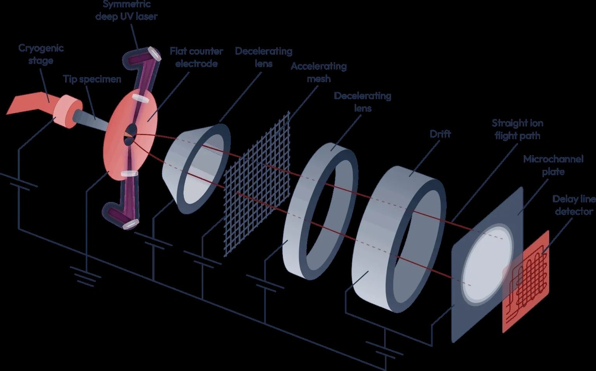
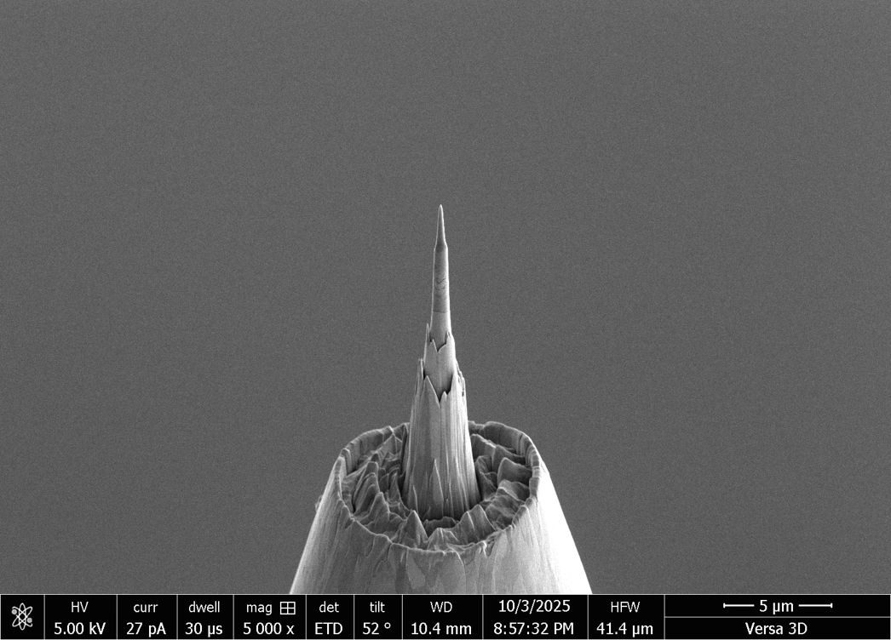
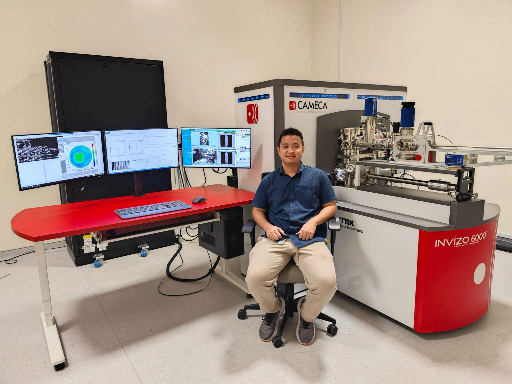
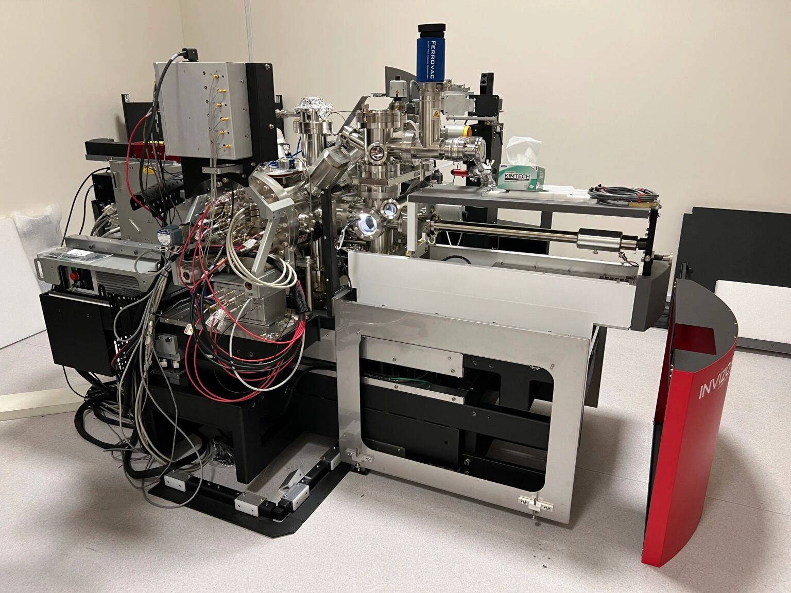
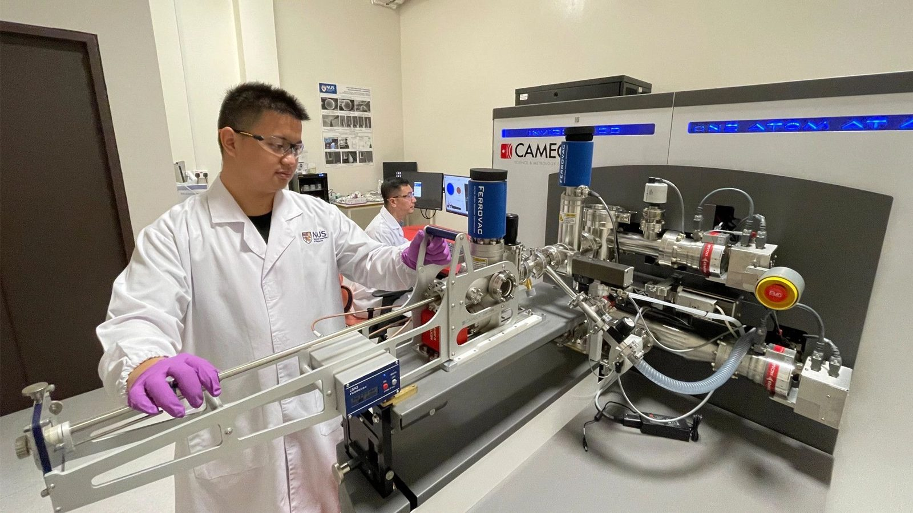
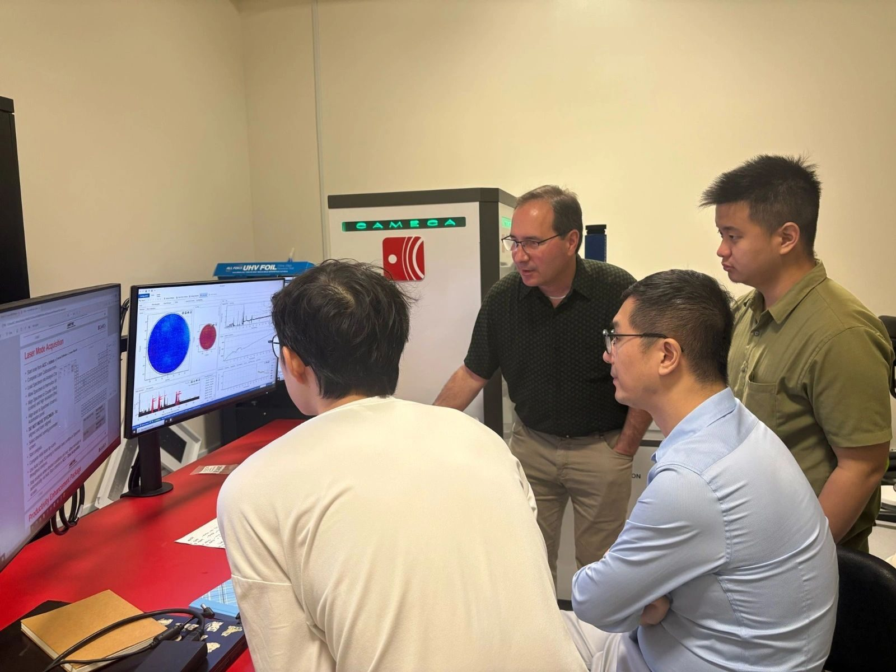
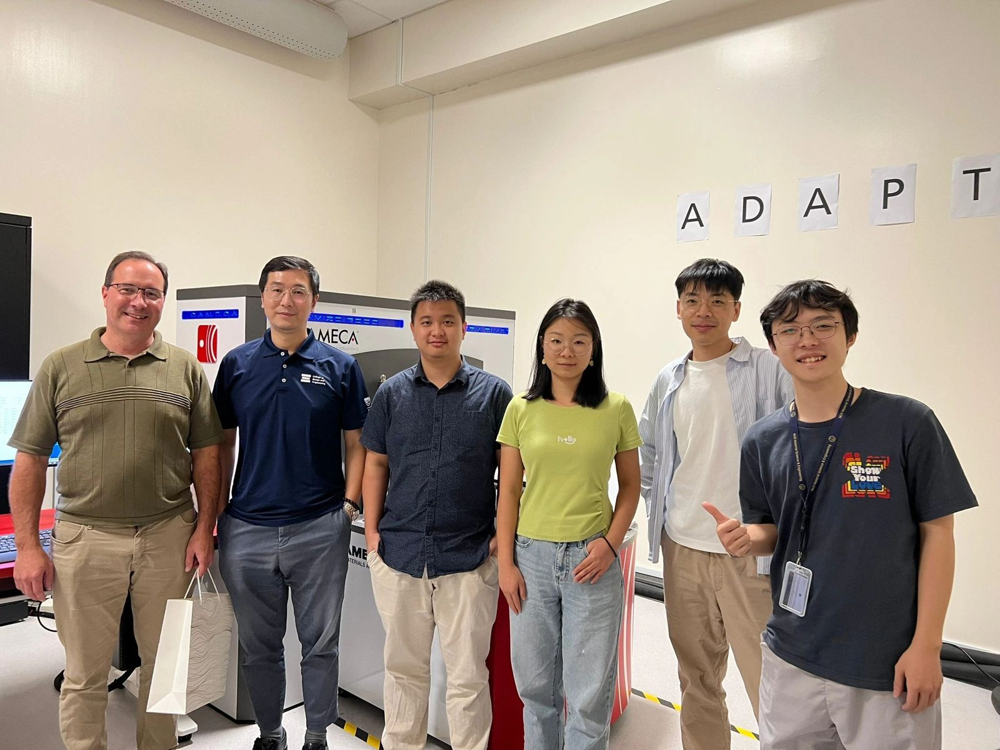
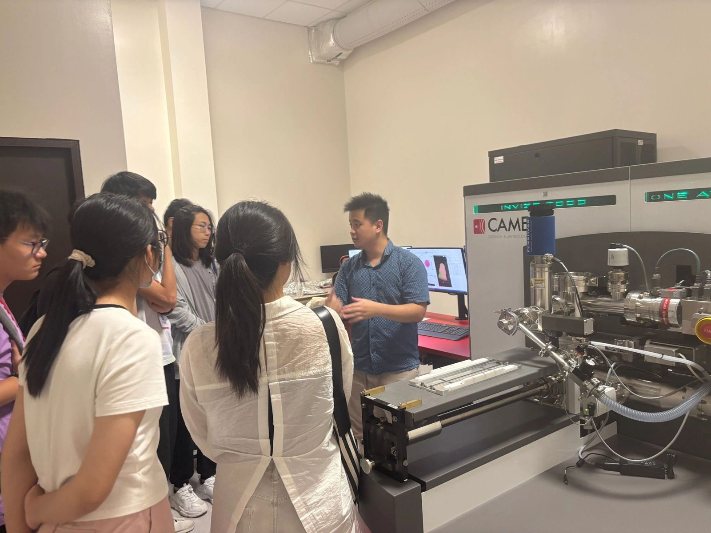
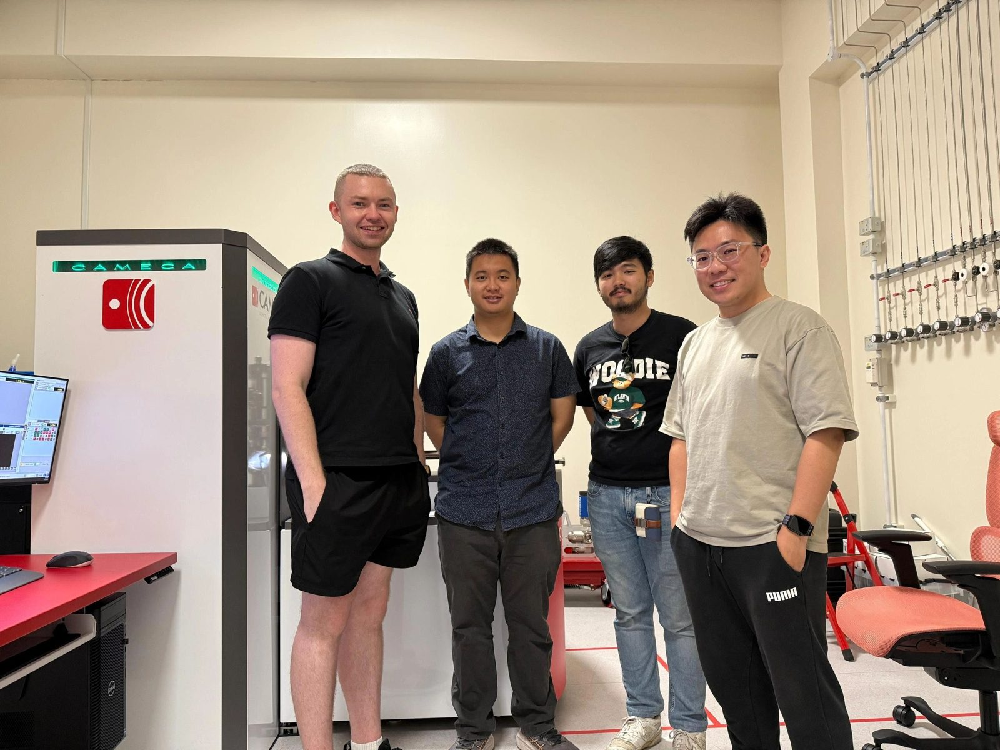

3D atom probe · materials characterisation
Probing atoms
The 3D atom probe is a near-atomic resolution characterisation method. It field-evaporates a tiny needle (under 100 nm at the tip) and reconstructs the evaporated ions by time-of-flight mass spectrometry into beautiful 3D volumes.


Running the NUS Invizo 6000
2024 – 2026





